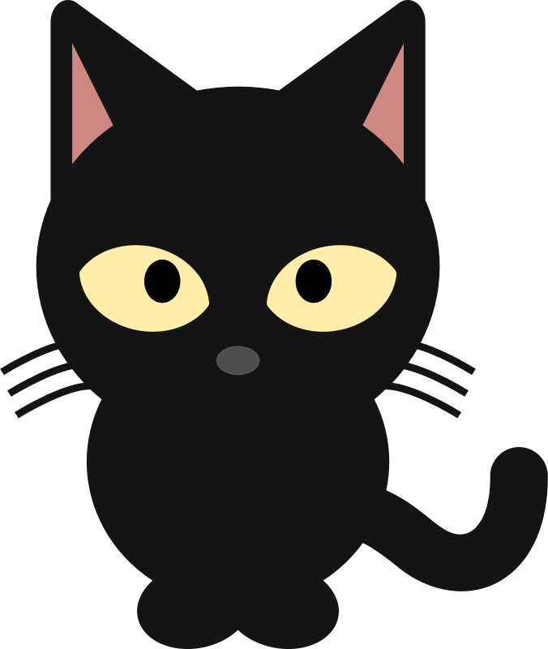
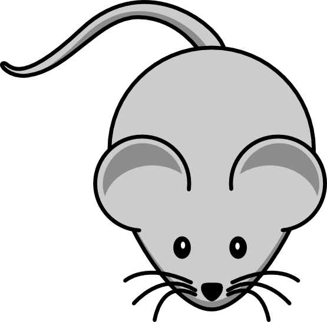

В одной деревне жил священник и был у него
КОТ

. Священник
КОТ
а очень любил, поскольку был одинок. И вот однажды вечером он не обнаружил
своего питомца в доме, естественно, забеспокоился и бросился его искать.
Нашел довольно быстро, поскольку домик и участок у него были скромные —
КОТ
залез на верхушку дерева и сидел там, зыркая глазами. Видимо, собака
загнала. Увидев хозяина
КОТ
жалобно замяукал, да так что сердце у того разрывалось от жалости. Но как
снять перепуганное животное? Уговоры и приманивания эффекта на дали… Но
мы, не в средние века живем — священник придумал такой ход: привязать к
дереву веревку и, с помощью машины, наклонить его к земле. Потом
КОТ
или сам спрыгнет, или он его возьмет. Веревку он конечно, привязал и
дерево машиной наклонил. Да вот только коэффициент прочности веревки в
расчет не взял… В общем, веревка лопнула в момент близости дерева с землей
— рогатка получилась еще та!